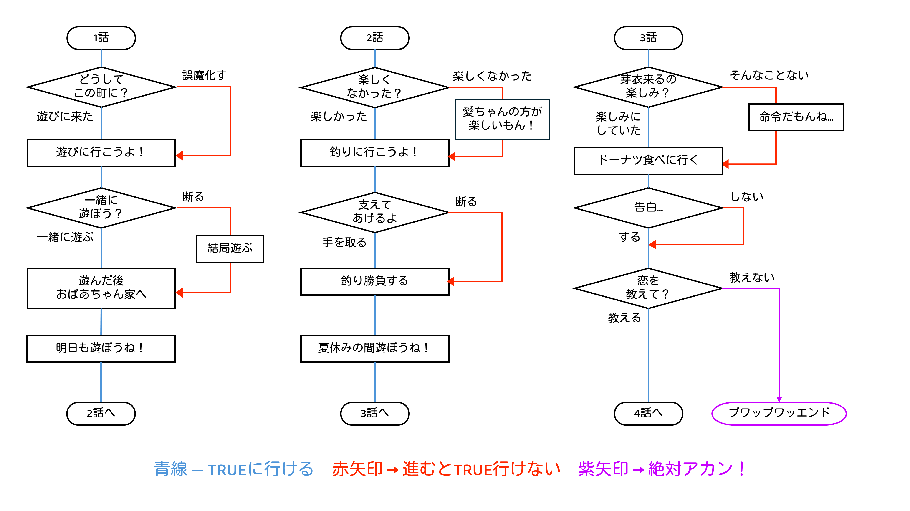

公開データ ダウンロード
もし恋のフローチャートや、星見プロのマイクラワールドを配布しています。
もし恋早坂芽衣編 フローチャート
2024年5月に初開催されたIDOLY PRIDEのイベント「もし恋 ～もしも君と恋をしたら～早坂芽衣編」で、
PowerPointで攻略フローチャートを作りました。スマホでも閲覧可能なPDF版もあります。
フローチャートの他、スピーカーノートに台詞の全文を載せています。(pptx形式のみ)
下のリンクからダウンロードできます。
moshikoiMei_flowchart.pptx (pptx形式 32.2MB)
moshikoiMei_flowchart.pdf (pdf形式 222KB ※フローチャートのみ、台詞なし)

星見プロ東京寮・事務所 配布ワールド
Minecraftで、星見プロの東京寮と、事務所を再現したワールドを作りました。
詳しい使い方や利用条件等は、リンク先のダウンロードページでご確認ください。
配布ワールドのダウンロードページへ(GitHub)
(OSの設定により、スライドショーのアニメーションを抑えています。)